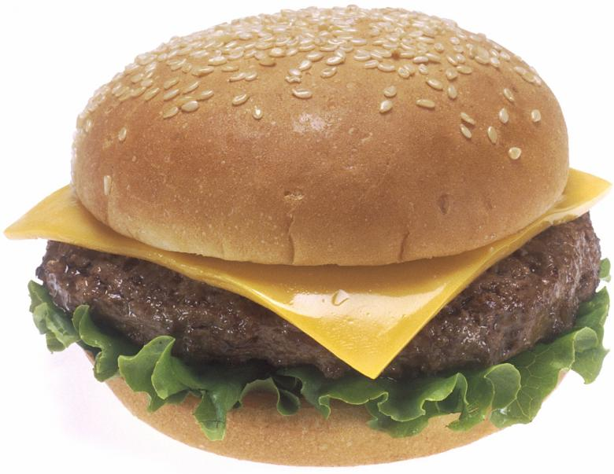

Cheeseburger

Description
Cheeseburger is my favourite food. I crave for it if I've not eaten it for a long time. It is my go-to comfort food.
Ingredients
- Sesame bun
- Ground beef
- Lettuce
- Tomato
- Mustard sauce
- Processed Cheddar cheese
- Salt
- Pepper
- Butter
Steps
- Cut the sesame buns in half, butter both cut sides, and toast them on the pan. Remove when done.
- Shape ground beef into gold ball sized spheres, flatten it into a patty, and grill on pan.
- Crack some pepper over it, and apply a bit of salt. Flip after 3 minutes.
- Put cheese on it. Remove when cheese is melted.
- Assemble the burger by applying a bit of mustard on the bottom bun, putting the patty on the bottom bun, followed by lettuce on top of it, then tomatoes.
- Finally put the top bun over it and enjoy!
Back to Homepage